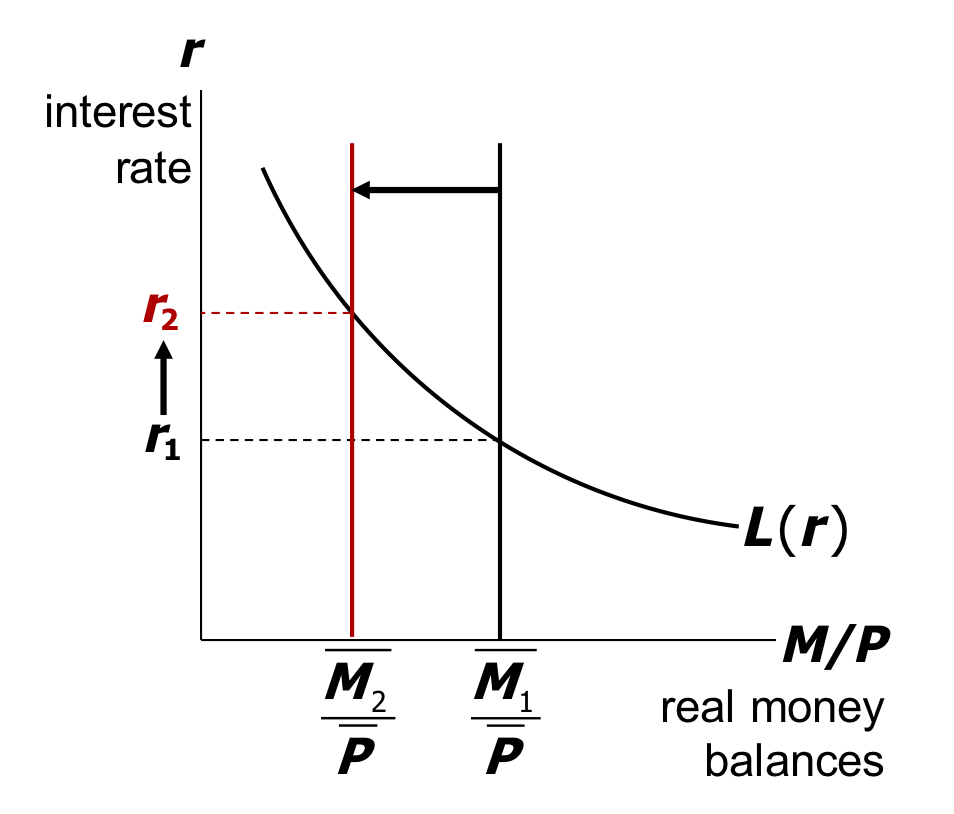

央行减少货币供应量会提高利率还是会降低利率?
Feng
July 1, 2021
在我们课程教材的第 11 章第 2 节关于货币市场的内容中，有一个案例，提出“货币政 策的紧缩是如何影响名义利率?”的问题。案例是根据美国上世纪七、八十年代的真实政策 效果和数据，得出了(时任美联储主席沃尔克的货币政策)减少货币供给，在短期使得利 率上升，但是在长期则是降低了通货膨胀进而降低了名义利率的结论。
如何在理论上解释这个看起来是矛盾的现象?
根据这一节讲到的理论，流动性偏好理论，即货币市场的供给和需求分析，在假定价 格是粘性的情况下，货币供给的减少，显然是会提高货币的“价格”，即利率会上升。这与 我们最熟悉的供给-需求分析框架没有什么本质区别。但是，大家在运动供求分析这个分析 工具时，一定要注意两点，一是这个流动性偏好理论是个短期分析工具，在短期，价格水 平是不变的或粘性的；二是经济学家们在进行供求分析时，通常是预设了“其他条件不变” 的。我们分别再仔细检视一下这两点。
第一点，在短期，假定价格水平是固定的，货币供给减少，降低了实际货币余额的供 给，均衡利率会上升。这个用教材中本章的图 11-10，即货币市场的供求分析就可以很直观地得到这个结论。但是，当我们将时间范围拉长，价格水平是灵活可变的，教科书就告诉我们，此时要用货币数量方程和费雪方程来分析了。这个分析的结果就是，减少货币供给，最终会降低利率。
从教学的角度讲，这种看似矛盾的结果，我们用“不同的理论框架”来解释，分别是长期和短期的不同结果，似乎是解释得通的。但是，正如我们的玩笑中提到的，向日葵如果晚上头朝西，那它们在清晨是如何“扭头”向东的？短期的货币供给变动是如何产生长期可能相反的效果的？这就需要仔细阐释一下我们前面说的第二点了，即“其他条件不变” 这个假设了。
第二点，经济学家们最得心应手的分析工具就是供求分析，但是这个分析往往是在假 设其他条件不变时，观测某一个外生变量的变化对内生变量产生的影响。比方说，在货币 供给需求分析的过程中，我们就是假设了价格水平 P 不变时，如果改变货币供应量 M，则 货币供给曲线会向左移动，自然结果就是利率会上升了。弗里德曼将这种机制称为流动性效应。但是，如果在较长的时间轴上，价格是可以变化的呢？除了价格变化了，还有其他因 素(如货币需求)也变化了呢?
价格水平效应：很显然，如果货币供应量减少的同时，在相对较长的时间线上，引起 价格下降的更多，那么实际货币余额是增加的，按照货币供给需求分析框架，利率是 有可能下降的。
收入效应：如果货币供给减少，在相对较长的时间线上，伴以国民收入水平和财富的 下降，则货币需求有可能会因此而下降，利率也会有可能因此而下降。
预期通货膨胀效应：货币供给增长率的降低(或提高)造成通货膨胀率的下降(或上 升)的机制，还有可能是通过影响预期通货膨胀率而影响利率。
综上，货币供给减少(或增加)对利率的影响，最终应该是取决于各种效应的综合结 果。有所有效应中，货币供给增长率变化的流动性效应通常会立即产生效果，这就是短期 内，货币供给减少会提高利率的结果。而价格水平效应、收入效应和预期通货膨胀效应等则需要相对较长时间才产生效果，这就是所谓长期分析了。